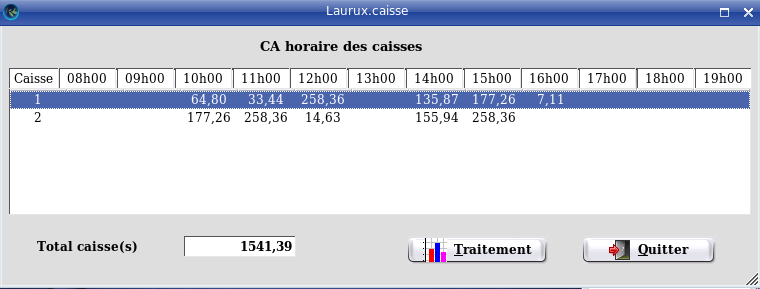

~ Laurux.Pos ~

~ Laurux.Pos ~ |
|
|
|
Ca des caisses.
A n'importe quel moment de la journée, il est
possible d'avoir le chiffre d'affaire horaire des caisses à partir du serveur.
Dans le menu "Caisse", on a une une option "Statistiques" qui permet d'acceder au "Ca journalier"

Pour faire apparaitre le détail du CA horaire il faut cliquer sur le bouton "Traitement".
Cette opération fonctionne en temps réel et il n'est
pas besoin que l'ensemble des caisses soient connectées pour pouvoir
fonctionner.
NB: Cette opération ne traite que le CA de la journée en cours.
----------------------------------------------------------------------------------------------------------------------